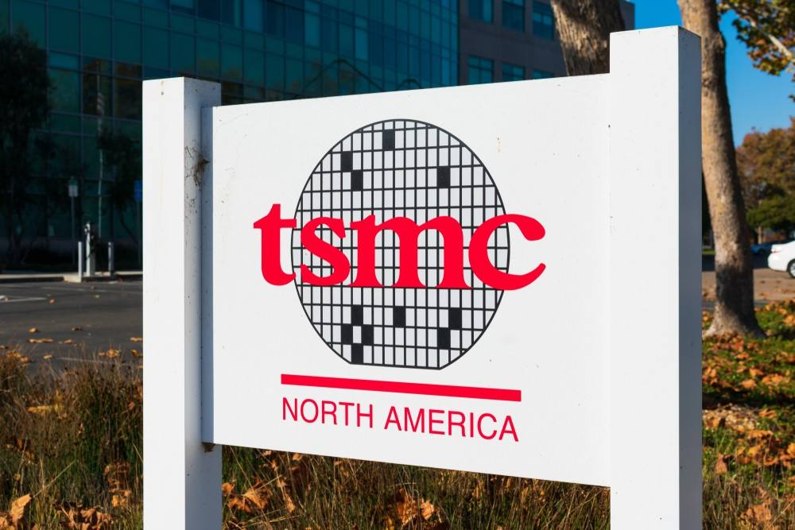

TSMC October Revenue Jumps 59.7% to Record NT$586.9 Billion on AI Demand
TSMC reported October 2026 consolidated revenue of NT$586.89 billion (about US$17.9 billion), up 59.7% year over year and up 14.7% from September, an all-time monthly record. The growth rate accelerated from 54.6% in September, and January-October revenue of NT$4,485.62 billion already exceeds full-year 2025. Fourth-quarter guidance is US$52.3 billion to US$54.3 billion.

- 01THE PRINT — TSMC reported October 2026 consolidated revenue of NT$586.89 billion (about US$17.9 billion), up 59.7% year over year and up 14.7% from September, in a monthly revenue release published November 10, 2026, setting an all-time monthly record.
- 02THE DRIVER — Growth was driven by AI accelerators, high-performance computing and advanced-process demand, with the year-over-year rate accelerating from 54.6% in September; 2nm contributed 8% of third-quarter wafer revenue and is ramping.
- 03THE WATCHPOINT — Fourth-quarter guidance of US$52.3 billion to US$54.3 billion, and the November monthly revenue release, which will show whether the October pace holds or fades and whether margins stay in the guided band.
WHAT HAPPENEDWhat Happened
Taiwan Semiconductor Manufacturing Co. reported unaudited consolidated net revenue of NT$586.89 billion (about US$17.9 billion) for October 2026, up 59.7% year over year from NT$367.47 billion in October 2025 and up 14.7% from NT$511.86 billion in September 2026. The print set an all-time monthly record, topping the previous high of NT$514.81 billion recorded in August by NT$72.08 billion.
The year-over-year growth rate accelerated from 54.6% in September to 59.7% in October, and the growth was driven by demand for AI accelerators, high-performance computing and advanced-process chips, according to the company's announcement as reported. TSMC's third quarter, reported October 15, already set records: revenue of NT$1.494 trillion, up 50.9% year over year, and net profit of NT$763.06 billion, up 68.7%. In that quarter, 3nm contributed 33% of wafer revenue, 5nm 28% and 2nm 8%, with 7nm and more advanced processes at a combined 79%.
Revenue for the first ten months of 2026 reached NT$4,485.62 billion, up 43.3% year over year, already above TSMC's full-year 2025 revenue of NT$3,809.05 billion. TSMC shares rose 2.2% on the Taiwan Stock Exchange after the news, and its NYSE-listed shares also rose in premarket trade.
WHY IT MATTERSThe foundry at the center of the AI build-out is still accelerating
TSMC makes the chips that the AI build-out runs on, for Nvidia, AMD and the hyperscalers' custom silicon, so its monthly revenue is the most direct read on how much AI hardware is actually being ordered. A 59.7% year-over-year rise that accelerates from September's 54.6%, on top of a record third quarter, says demand is still compounding rather than plateauing: customers are still paying for more advanced-process capacity, and the 2nm ramp is adding to the total rather than cannibalizing it.
The record matters because of what it follows. August held the previous monthly high at NT$514.81 billion; October beat it by 14%. Ten months of revenue already exceed the whole of 2025. That sequence, a record quarter followed by a record month at a faster growth rate, is the strongest signal the foundry can send that the AI capex cycle has not yet turned.
WHY IT MATTERSA monthly print, not a quarter, and the fourth-quarter test
Monthly revenue is a noisy signal by design: it is unaudited, it covers one month, and a single large customer's shipment schedule can move it. What makes this print worth more than a single month is the sequence. September grew 54.6% year over year, October grew 59.7%, and the third quarter grew 50.9%. Three consecutive readings at this pace, plus a fourth-quarter guide of US$52.3 billion to US$54.3 billion, is a trend, not a spike.
The test now is whether November holds the pace. October alone is roughly a third of the fourth-quarter revenue guide at the midpoint, so the guide looks reachable if the next two prints stay near this level. The other watchpoint is cost: TSMC guided fourth-quarter gross margin at 65% to 67% and operating margin at 56.5% to 58.5%, while capital expenditure from 2026 to 2028 is set to run significantly above the previous three years as overseas fabs and advanced capacity expand. The November print and the margin line are the checks.
SIGNAL JUDGMENT — ANALYSISThe record month is the signal, not the size alone
Tokenta Signal's judgment: This is a supply-chain print, and its meaning is in the acceleration. A record month after a record quarter, with the growth rate still rising, says the AI hardware cycle is compounding at the foundry level rather than cooling. The honest check is the November print and the margin line: TSMC is spending heavily on overseas fabs and advanced capacity, and the fourth-quarter guide of US$52.3 billion to US$54.3 billion assumes the October pace roughly holds. A monthly figure is unaudited and can swing on one customer's schedule, so the number to watch is whether November stays near this level and gross margin stays inside the 65% to 67% band.
WHAT REMAINS UNCERTAINWhat Remains Uncertain
EVIDENCEEvidence
TipRanks report, read in full: Taiwan Semiconductor Manufacturing Company saw its October revenue rise 59.7% year-over-year, as demand for chips used in AI systems stayed high. The world's largest chip maker posted revenue of NT$586.89 billion (about $17.88 billion, as per CNBC) in October 2026, up from NT$367.47 billion in the same month last year. Revenue also rose 14.7% from NT$511.86 billion in September. Revenue for the first 10 months of 2026 rose 43.3% to NT$4.486 trillion.
PRIMARY SOURCESPrimary Sources
- TipRanks: TSMC's October Revenue Jumps 60% on AI Demand; Shares Rise
https://www.tipranks.com/news/tsmcs-october-revenue-jumps-60-on-ai-demand-shares-rise - TradingKey: TSMC October Revenue Hits Record High, Surging 59.7% as AI Chip Demand Remains Strong
https://www.tradingkey.com/analysis/stocks/us-stocks/262297791-tsmc-october-revenue-record-59-7-percent-yoy-ai-chip-demand-tradingkey - Seoul Economic Daily: TSMC October Revenue Jumps 60% to Record High on AI Demand
https://en.sedaily.com/world/2026/11/10/tsmc-october-revenue-jumps-60-percent-to-record-high-on-ai